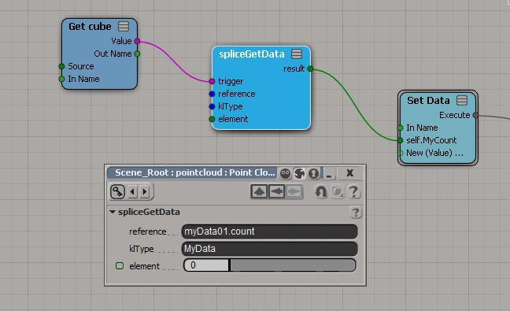

Splice ICE nodes¶
spliceGetData ICE node¶
The spliceGetData ICE node is used to pull data from a KL singleton into ICE. The data has to be stored in a KL object, which in turn has to be stored in a singleton. See the code below for an example how to make data available to the spliceGetData node.
require Singletons;
object MyData {
SInt32 count;
Vec3 pos[];
Vec3 fur[][];
};
operator mySoftimageOp() {
MyData ud();
ud.count = 100;
ud.pos.resize(count);
ud.fur.resize(count);
/* ... fill in the data */
Singleton_set('myData01', ud);
}
注釈
To ensure data integrity, it’s safer to define the data structure inside a KL extension instead of inlining it with the operator code.
注釈
You can also use the EvalContext to get access to the SpliceOp’s name inside softimage. This can be handy to create unique names within the scene.
The spliceGetData node can now be used to query data from that singleton. Since there is no way in Softimage to connect directly to the splice operator, the ICE node comes with a trigger port, which can be used to connect to the data providing Softimage object, for example a mesh.
The ports in detail:
- trigger: Connect the incoming data provider object here, let it be a mesh or a kinematic state.
- reference: A string defining an address in the singleton. The first section has to be the name of the singleton, the second the member to access.
- klType: The KL type of the singleton object. This has to match, since the spliceGetData will have to cast the data accordingly.
- element: This port is used to define the data, structure and context type of the outgoing data. You will have to connect a piece of data which matches your data layout.
The data types currently support for the spliceGetData node are:
- long in ICE : SInt32 or Integer in KL
- Float in ICE: Float32 or Scalar in KL
- Vector3 in ICE: Vec3 in KL
- Color4 in ICE: Color in KL
The spliceDataNode will obey the data, structure and context layout of the incoming element port. There are four variations of this layout:
- singleton context, single value: A single value in KL. (such as count in the example above)
- singleton context, array value: An array value in KL. (such as pos in the example above)
- per element context, single value: An array value in KL. (such as pos in the example above)
- per element context, array value: A two-dimensional array in KL. (such as fur in the example above)